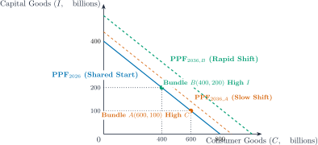
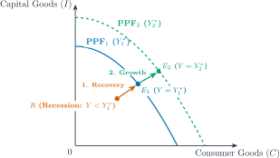
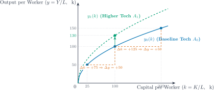

2 Chapter 2: The Macroeconomic Production Possibilities Frontier & Capital Deepening
This chapter extends the Production Possibilities Frontier (PPF) from static microeconomic resource trade-offs to dynamic macroeconomic growth. By contrasting current Consumer Goods (\(C\)) against Capital Goods (\(I\)), we examine how gross investment and physical depreciation (\(\delta K\)) govern net capital accumulation (\(\Delta K\)). We then distinguish short-run recessionary output gaps (\(Y < Y^*\)) and temporary overheating (\(Y > Y^*\)) from long-run secular frontier shifts, analyze capital deepening (\(K/L\)) under diminishing marginal returns, and apply the Rule of 70 alongside exact compound growth to quantify how small differences in annual growth rates reshape living standards across generations.
Learning Outcomes and Key Terms
Upon completing this chapter, students should be able to:
- Analyze the macroeconomic intertemporal trade-off between Consumer Goods (\(C\)) and Capital Goods (\(I\)), and calculate net capital accumulation (\(\Delta K = I - \delta K\)).
- Distinguish short-run business cycle recovery (moving from an interior recessionary gap \(Y < Y^*\) back onto the PPF) from long-run secular growth (shifting the PPF and Potential GDP \(Y^*\) outward).
- Explain how capital deepening (\(K/L\)) raises labor productivity (\(Y/L\)), why diminishing marginal returns limit investment-only growth, and why sustained growth requires Total Factor Productivity (\(A\)).
- Apply the Rule of 70 (\(\text{Doubling Years} \approx 70 / g\)) and exact compound growth (\(Y_n = Y_0(1+r)^n\)) to compare multi-decade living standard trajectories.
Key Terms: macroeconomic Production Possibilities Frontier (PPF), consumer goods, capital goods, intertemporal trade-off, gross investment (\(I\)), depreciation (\(\delta K\)), net investment (\(\Delta K\)), Potential GDP (\(Y^*\)), recessionary output gap, overheating, secular growth, capital deepening (\(K/L\)), diminishing marginal returns to capital, Total Factor Productivity (\(A\)), Rule of 70.
In 1960, South Korea and Ghana had virtually identical real GDP per capita (roughly \(\$1,200\) in modern purchasing-power-parity dollars). Over the next six decades, South Korea transformed into a high-income industrial and semiconductor powerhouse with per capita income exceeding \(\$35,000\), while Ghana’s living standards grew far more slowly. Both nations faced the same fundamental macroeconomic choice on their Production Possibilities Frontiers: devote current output to immediate consumption, or sacrifice consumption today to invest in factories, ports, power grids, and education. Understanding how that intertemporal trade-off shifts the macroeconomic PPF outward explains why nations grow rich—or fall behind.
2.1 Consumer vs. Capital Goods & Intertemporal Trade-Offs
Conceptual Introduction
In microeconomics, the Production Possibilities Frontier illustrates how a society divides scarce resources between two specific products, such as wind turbines and cargo ships. In macroeconomics, we aggregate all national output into two broad categories that govern living standards across time: Consumer Goods (\(C\)) and Capital Goods (\(I\)). Consumer goods—such as groceries, apparel, streaming subscriptions, and restaurant meals—deliver immediate comfort and satisfaction to households today, but once consumed they add nothing to the economy’s future productive capacity. By contrast, capital goods—such as semiconductor fabrication equipment, hyperscale computing servers, electrical grid transformers, warehouses, and ports—are durable assets produced today so that workers can produce more goods and services tomorrow.
Because total resources in any given year are finite, choosing a point along the macroeconomic PPF creates an intertemporal trade-off (a trade-off across time). Producing more consumer goods today requires diverting engineers, steel, electricity, and construction crews away from building capital goods. However, existing machinery, buildings, and software constantly wear out, break down, or become technologically obsolete—a process economists call depreciation (\(\delta K\)), where \(\delta\) is the annual depreciation rate and \(K\) is the existing capital stock.
Consequently, an economy’s future productive capacity depends on net investment (\(\Delta K\)), defined as gross capital goods production (\(I\)) minus depreciation (\(\delta K\)). If gross investment exceeds depreciation (\(I > \delta K\)), the capital stock grows (\(\Delta K > 0\)) and the future PPF shifts outward. If gross investment merely replaces worn-out equipment (\(I = \delta K\)), net investment is zero (\(\Delta K = 0\)) and the PPF stays stationary. If an economy consumes so heavily that gross investment falls short of depreciation (\(I < \delta K\)), its capital stock shrinks (\(\Delta K < 0\)) and the PPF actually contracts inward.
Visual Representation
Figure 1 illustrates a linear macroeconomic PPF contrasting Consumer Goods (\(C\)) on the horizontal axis against Gross Capital Goods Production (\(I\)) on the vertical axis. Both Country A (at High-Consumption Bundle \(A\)) and Country B (at High-Investment Bundle \(B\)) begin in 2026 on the same baseline frontier (\(\text{PPF}_{2026}\)), but Country B’s higher capital investment shifts its 2036 frontier (\(\text{PPF}_{2036,B}\)) substantially further outward than Country A’s (\(\text{PPF}_{2036,A}\)).

- Economic vs. Financial Investment: In macroeconomics, investment (\(I\)) means producing physical machinery, buildings, and software—not buying stocks, bonds, or cryptocurrency on financial markets.
- Gross Investment \(\neq\) Net Investment: Positive gross investment (\(I > 0\)) still shrinks the capital stock if new production falls below annual wear-and-tear (\(I < \delta K\)).
- The Zero-Consumption Trap: Investing \(100\%\) of GDP (\(C = 0\)) is impossible because workers need food, housing, and healthcare to stay alive and operate machinery.
Modern hyperscale AI data centers and electrical grid modernization illustrate the intertemporal macroeconomic trade-off in real time. High-voltage grid transformers, electrical engineers, and construction crews cannot simultaneously build residential housing complexes and hyperscale compute facilities. Under a high-consumption regime, minimal net capital is added and aging bridges, transit systems, and power lines erode faster than they are replaced. By contrast, high-investment regimes—such as East Asian export economies during their industrialization waves or targeted grid and compute infrastructure buildouts—channel current output into durable assets that expand future national production capacity.
Mathematical Foundation
Along the linear macroeconomic PPF in Figure 1, maximum Consumer Goods output is \(C_{\max} = \$800\text{ billion}\) (when \(I = \$0\)) and maximum Capital Goods output is \(I_{\max} = \$400\text{ billion}\) (when \(C = \$0\)). The slope of the frontier is \(-\frac{400}{800} = -0.5\), yielding the linear PPF equation:
\[ I = 400 - 0.5C \]
Thus, producing \(+\$1\text{ billion}\) of Consumer Goods requires sacrificing \(\$0.5\text{ billion}\) of Capital Goods, while producing \(+\$1\text{ billion}\) of Capital Goods requires sacrificing \(\$2\text{ billion}\) of Consumer Goods.
To track how capital goods production updates the nation’s physical capital stock over time, let \(K_1\) denote Year 1 capital stock, \(\delta \in (0, 1)\) denote the annual depreciation rate, and \(I_1\) denote Year 1 gross investment:
\[ \Delta K = I_1 - \delta K_1, \qquad K_2 = K_1 + I_1 - \delta K_1 = (1 - \delta)K_1 + I_1 \]
Part A (Moving Along the Linear PPF): Using \(I = 400 - 0.5C\):
- High-Consumption Bundle \(A\) (\(C = \$600\text{B}\)): \[I_A = 400 - 0.5(600) = 400 - 300 = \$100\text{ billion of capital goods}.\]
- Shift to High-Investment Bundle \(B\) (\(C = \$400\text{B}\)): Cutting Consumer Goods by \(\$200\text{B}\) (from \(\$600\text{B}\) to \(\$400\text{B}\)) frees resources to produce: \[I_B = 400 - 0.5(400) = 400 - 200 = \$200\text{ billion of capital goods} \quad (+\$100\text{B gain}).\]
Part B (Depreciation & Year 2 Capital Stock): Suppose a nation begins Year 1 with \(K_1 = \$10,000\text{ billion}\) in physical capital, an annual depreciation rate of \(\delta = 6\%\) (\(0.06\)), and Year 1 gross investment of \(I_1 = \$950\text{ billion}\):
- Step 1 — Annual Capital Depreciation (\(\delta K_1\)): \[\delta K_1 = 0.06 \times \$10,000\text{ billion} = \$600\text{ billion worn out in Year 1}.\]
- Step 2 — Net Investment (\(\Delta K\)) & Year 2 Stock (\(K_2\)): \[\Delta K = \$950\text{B} - \$600\text{B} = +\$350\text{ billion} \implies K_2 = \$10,000\text{B} + \$350\text{B} = \$10,350\text{ billion}.\]
- Step 3 — Break-Even Maintenance Threshold (\(I_{\min}\)): To prevent the capital stock from shrinking (\(\Delta K \ge 0\)), gross investment must at least equal annual depreciation: \(I_{\min} = \delta K_1 = \$600\text{ billion}\).
2.2 Output Gaps vs. Secular Economic Growth
Conceptual Introduction
A central distinction in macroeconomics separates short-run business cycle fluctuations from long-run secular economic growth. In any single year, the macroeconomic PPF defines the economy’s Potential GDP (\(Y^*\))—the maximum sustainable level of real output the nation can produce when its labor force, factories, and technology operate at normal full-employment utilization. When the economy operates directly on its PPF, actual real GDP equals Potential GDP (\(Y = Y^*\)).
During an economic downturn or recession, however, aggregate spending drops, assembly lines run below capacity, and workers are laid off. Rather than destroying the physical PPF itself, a recession pushes the economy to an inefficient operating point inside the frontier (\(Y < Y^*\)). Economists call this shortfall a recessionary output gap: the physical machinery, buildings, and skilled workers still exist, but they are temporarily idle. Conversely, during a short-lived demand surge, factories may run unsustainable overtime shifts and temporarily push output slightly beyond normal capacity (\(Y > Y^*\)), creating inflationary overheating.
Recovering from a recession and achieving long-run economic growth therefore represent two fundamentally different movements on the macroeconomic PPF diagram. Cyclical recovery moves the economy from an interior point back outward toward its existing frontier, closing the recessionary gap (\(Y \to Y^*\)). By contrast, secular economic growth shifts the entire frontier outward (\(\text{PPF}_1 \to \text{PPF}_2\)), raising Potential GDP (\(Y^*_1 \to Y^*_2\)) through capital deepening, human capital improvements, and Total Factor Productivity (\(A\)), where \(Y^* = A \cdot f(K, L^*)\).
Visual Representation
Figure 2 contrasts Stage 1—a short-run cyclical recovery moving from interior Recession Point \(R\) back to full-capacity Point \(E_1\) on \(\text{PPF}_1\)—with Stage 2—long-run secular growth expanding Potential GDP outward from \(E_1\) on \(\text{PPF}_1\) to \(E_2\) on \(\text{PPF}_2\).

- Stimulus \(\neq\) Secular Growth: Countercyclical fiscal or monetary stimulus (such as tax cuts or interest-rate reductions) closes recessionary output gaps (\(R \to E_1\)) by restoring aggregate spending, but cannot permanently shift the long-run PPF outward.
- Potential GDP \(\neq\) Hard Physical Wall: \(Y^*\) estimates normal sustainable full-employment output, not an absolute physical ceiling; temporary surges (\(Y > Y^*\)) strain capacity and fuel inflation.
- TFP Residual Scope: Robert Solow’s productivity residual (\(A\)) captures broad efficiency gains—better management, logistics, software, and institutions—not merely a single invention.
Recent U.S. macroeconomic history illustrates both sides of Potential GDP. Following the 2008–2009 financial crisis and housing crash, the U.S. economy operated inside its PPF with a persistent negative output gap until 2015 as idle factories and unemployed workers were gradually reabsorbed. By contrast, during 2021–2022, rapid fiscal and monetary stimulus combined with reopening propelled aggregate spending temporarily above normal sustainable capacity (\(Y > Y^*\)), triggering acute supply-chain bottlenecks and inflation until growth moderated back toward the secular frontier path.
Mathematical Foundation
Economists measure the severity of a cyclical downturn or overheating episode using the output gap, defined as the dollar and percentage deviation of actual real GDP (\(Y\)) from Potential GDP (\(Y^*\)):
\[ \text{Output Gap (\$)} = Y - Y^*, \qquad \text{Percentage Output Gap} = \frac{Y - Y^*}{Y^*} \times 100\% \]
When \(Y < Y^*\), the output gap is negative (recessionary gap), placing the economy inside its PPF.
Suppose 2026 Potential GDP along \(\text{PPF}_1\) is \(Y^*_1 = \$25.0\text{ trillion}\). During a recession, actual real GDP drops to interior Point \(R\) at \(Y = \$24.0\text{ trillion}\), while long-run capital and Total Factor Productivity gains expand Potential GDP by \(+3.0\%\) per year:
- Step 1 — Measure the Recessionary Output Gap: \[\text{Output Gap (\$)} = \$24.0\text{T} - \$25.0\text{T} = -\$1.0\text{ trillion}\] \[\text{Percentage Output Gap} = \frac{\$24.0\text{T} - \$25.0\text{T}}{\$25.0\text{T}} \times 100\% = -4.0\%.\] The economy is operating \(4.0\%\) inside its production frontier.
- Step 2 — Cyclical Recovery to Full Capacity (\(R \to E_1\)): Rehiring idle workers and restarting shuttered plants adds \(+\$1.0\text{ trillion}\) of output, restoring \(Y = \$25.0\text{ trillion}\) (\(0\%\) output gap, a \(+\$1.0\text{T} / \$24.0\text{T} \approx +4.17\%\) cyclical rebound).
- Step 3 — Secular Growth of Potential GDP (\(\text{PPF}_1 \to \text{PPF}_2\)): New capital deepening and TFP growth expand Potential GDP by \(3.0\%\): \[Y^*_2 = \$25.0\text{T} \times 1.03 = \$25.75\text{ trillion}.\]
2.3 Capital Deepening, Diminishing Returns & The Rule of 70
Conceptual Introduction
What actually shifts the macroeconomic PPF outward year after year, raising real income per person? The single most important determinant of long-run living standards is labor productivity (\(y = Y/L\))—the quantity of real goods and services produced per worker (or per hour worked). To make each worker more productive, an economy can increase the amount of physical capital (machinery, computers, tools) and human capital (education, technical training) available per worker—a process called capital deepening (\(k = K/L\)). Giving a construction crew excavators instead of shovels, or equipping analysts with high-speed computing workstations, dramatically increases output per worker.
However, capital deepening obeys a fundamental constraint: diminishing marginal returns to capital. Holding technology and worker skills constant, each successive dollar of physical capital per worker adds less incremental output than the dollar before it. Equipping a farmer with a first tractor multiplies grain output; adding a second tractor for the same farmer yields a smaller boost; adding a third tractor adds almost nothing. Because of diminishing returns, physical capital accumulation alone cannot sustain perpetual growth in per-capita output—eventually, extra machines generate too little extra output even to cover their own depreciation.
How, then, do advanced economies achieve continuous growth in living standards over centuries? The answer is Total Factor Productivity (\(A\))—technological innovation, scientific breakthroughs, software automation, and better organizational management that allow workers to produce more output from the exact same stock of capital and labor. Because annual productivity growth compounds over decades, even seemingly tiny percentage differences in annual growth rates transform national wealth, a relationship captured cleanly by the Rule of 70.
Visual Representation
Figure 3 plots the per-worker production relationship between Capital per Worker (\(k = K/L\)) and Real Output per Worker (\(y = Y/L\)). Along the baseline curve \(y_0(k)\), equal increases in output per worker (\(\Delta y = +\$50\text{k}\)) require progressively larger injections of capital per worker (\(\Delta k = +\$75\text{k}\), then \(+\$125\text{k}\)), demonstrating diminishing marginal returns. Technological progress shifts the entire curve upward to \(y_1(k)\), raising output per worker even without additional capital deepening.

- Decimal Trap in the Rule of 70: Always divide \(70\) by the percentage number (\(3.5\)) rather than its decimal equivalent (\(0.035\)), which would falsely yield \(2,000\text{ years}\).
- Linear vs. Compound Math: Two doublings quadruple income (\(2^2 = 4\times\)) rather than tripling it (\(3\times\)), because each year’s percentage gain builds upon all prior gains.
- Total GDP vs. GDP per Capita: Living standards depend on real output per person (\(Y/L\)), not raw aggregate GDP growth driven solely by population expansion.
Public policy shapes long-run per-capita growth through three primary channels: (1) public and higher education, which deepens human capital and accelerates workers’ adoption of new tools; (2) research and development (R&D) grants and patent protection, which spur scientific breakthroughs that lift Total Factor Productivity (\(A\)); and (3) ports, transit, and power-grid infrastructure, which lower shipping and energy costs across every industry. Because annual gains compound over decades, policies that lift annual real GDP per capita growth by even \(1.5\) percentage points transform national prosperity within a single human lifetime.
Mathematical Foundation
To measure capital deepening and long-run compound growth using high-school algebra, define capital per worker (\(k\)) and output per worker (\(y\)) as:
\[ k = \frac{K}{L}, \qquad y = \frac{Y}{L} \]
When real GDP per capita grows at an annual decimal rate \(r = g/100\), exact income after \(n\) years follows the compound growth formula:
\[ Y_n = Y_0 \times (1 + r)^n \]
For rapid mental comparisons, the Rule of 70 estimates how many years it takes for real GDP per capita to double (staying within \(1\text{ year}\) of exact doubling for growth rates below \(5\%\)):
\[ \text{Doubling Years} \approx \frac{70}{g} \]
where \(g\) is entered as a percentage value (for example, \(g = 2.0\) for a \(2.0\%\) annual growth rate).
Part A (Measuring Capital Deepening \(k = K/L\)): Over a five-year period, an economy’s physical capital stock grows from \(K_0 = \$800\text{ billion}\) to \(K_1 = \$1,050\text{ billion}\), while its workforce grows from \(L_0 = 10.0\text{ million}\) to \(L_1 = 10.5\text{ million}\) workers:
- Initial Capital per Worker (\(k_0\)): \[k_0 = \frac{\$800,000\text{ million}}{10.0\text{ million workers}} = \$80,000\text{ per worker}.\]
- New Capital per Worker (\(k_1\)): \[k_1 = \frac{\$1,050,000\text{ million}}{10.5\text{ million workers}} = \$100,000\text{ per worker}.\] Because the capital stock grew faster (\(+31.25\%\)) than the labor force (\(+5.0\%\)), the economy achieved capital deepening of \(+\$20,000\) per worker (\(+25.0\%\)).
Part B (Two-Country Growth Race: 2026 to 2096): Suppose Country X and Country Y both start in 2026 with real GDP per capita of \(Y_0 = \$20,000\). Country X grows at \(g_X = 2.0\%\) per year (\(r_X = 0.02\)), whereas Country Y grows at \(g_Y = 3.5\%\) per year (\(r_Y = 0.035\)) over \(n = 70\text{ years}\) (to 2096):
- Step 1 — Doubling Times via the Rule of 70: \[\text{Country X: } \frac{70}{2.0} = 35\text{ years}, \qquad \text{Country Y: } \frac{70}{3.5} = 20\text{ years}.\] Over \(70\text{ years}\), Country X doubles \(70 / 35 = 2.0\) times (\(2^2 = 4\times \approx \$80,000\)), while Country Y doubles \(70 / 20 = 3.5\) times (\(2^{3.5} \approx 11.31\times \approx \$226,274\)).
- Step 2 — Exact 2096 Income After 70 Years (\(Y_{70} = Y_0(1+r)^{70}\)): \[\text{Country X: } \$20,000 \times (1.02)^{70} = \$79,991, \qquad \text{Country Y: } \$20,000 \times (1.035)^{70} = \$222,257.\]
- Step 3 — Relative Living Standard Ratio: \[\frac{\$222,257}{\$79,991} \approx 2.8\times \text{ higher real income per person in Country Y}.\] A \(1.5\)-percentage-point gap in annual growth nearly triples living standards within a single 70-year span.
Returning to our opening comparison of South Korea and Ghana: nations are not locked onto a fixed Production Possibilities Frontier forever. By choosing points along the frontier that prioritize physical infrastructure, industrial equipment, and human capital investment above annual depreciation, South Korea steadily expanded its capital per worker and shifted its PPF outward decade after decade. Combined with technological adoption that pushed Total Factor Productivity (\(A\)) higher, compound growth transformed living standards within two generations.
Check Your Understanding
Gross vs. Net Investment: An economy starts the year with a capital stock of \(K_1 = \$5,000\text{ billion}\) and an annual depreciation rate of \(\delta = 8\%\).
What is the minimum gross investment (\(I_1\)) required just to prevent the capital stock from shrinking?
Calculate net investment (\(\Delta K\)) and Year 2 capital stock (\(K_2\)) if gross investment is \(\$350\text{ billion}\).
What happens to the economy’s future PPF if gross investment rises to \(\$550\text{ billion}\)?
Recessionary Gaps vs. Secular Growth: Suppose an economy’s current Potential GDP is \(Y^*_1 = \$18.0\text{ trillion}\), but a downturn pushes actual real GDP inside the PPF to \(Y = \$17.1\text{ trillion}\).
Calculate the dollar output gap and the percentage output gap.
Explain in two sentences why closing this gap differs fundamentally from shifting the PPF outward.
Capital Deepening & The Rule of 70:
Over a decade, a nation’s capital stock rises from \(\$1,500\text{ billion}\) to \(\$2,200\text{ billion}\) while its workforce grows from \(20\text{ million}\) to \(22\text{ million}\). Calculate initial capital per worker (\(k_0\)), new capital per worker (\(k_1\)), and the percentage change in capital per worker.
If Real GDP per capita grows at \(2.5\%\) per year, use the Rule of 70 to find approximately how many years it takes for living standards to double (\(2\times\)) and to quadruple (\(4\times\)).
Worked Solutions
- (a) Annual depreciation is \(\delta K_1 = 0.08 \times \$5,000\text{B} = \$400\text{ billion}\), so \(I_1\) must equal at least \(\$400\text{ billion}\). (b) \(\Delta K = \$350\text{B} - \$400\text{B} = -\$50\text{ billion}\), shrinking Year 2 capital stock to \(K_2 = \$5,000\text{B} - \$50\text{B} = \$4,950\text{ billion}\). (c) If \(I_1 = \$550\text{ billion}\), net investment is positive (\(\Delta K = \$550\text{B} - \$400\text{B} = +\$150\text{ billion}\)), expanding the capital stock to \(\$5,150\text{ billion}\) and shifting the future PPF outward.
- (a) Dollar output gap \(= \$17.1\text{T} - \$18.0\text{T} = -\$0.9\text{ trillion}\) (a recessionary gap); percentage output gap \(= \frac{-0.9}{18.0} \times 100\% = -5.0\%\). (b) Closing the gap puts existing unemployed workers and idle factories back to work, moving the economy from an interior point back onto \(\text{PPF}_1\). Shifting the PPF outward expands Potential GDP (\(Y^*\)) itself through new capital accumulation, human capital, and Total Factor Productivity growth.
- (a) \(k_0 = \frac{\$1,500,000\text{M}}{20\text{M}} = \$75,000\text{ per worker}\); \(k_1 = \frac{\$2,200,000\text{M}}{22\text{M}} = \$100,000\text{ per worker}\); percentage increase \(= \frac{100,000 - 75,000}{75,000} \times 100\% = +33.33\%\). (b) Each doubling takes \(70 \div 2.5 = 28\text{ years}\); quadrupling (\(4\times = 2^2\)) requires two doublings, taking \(2 \times 28 = 56\text{ years}\).